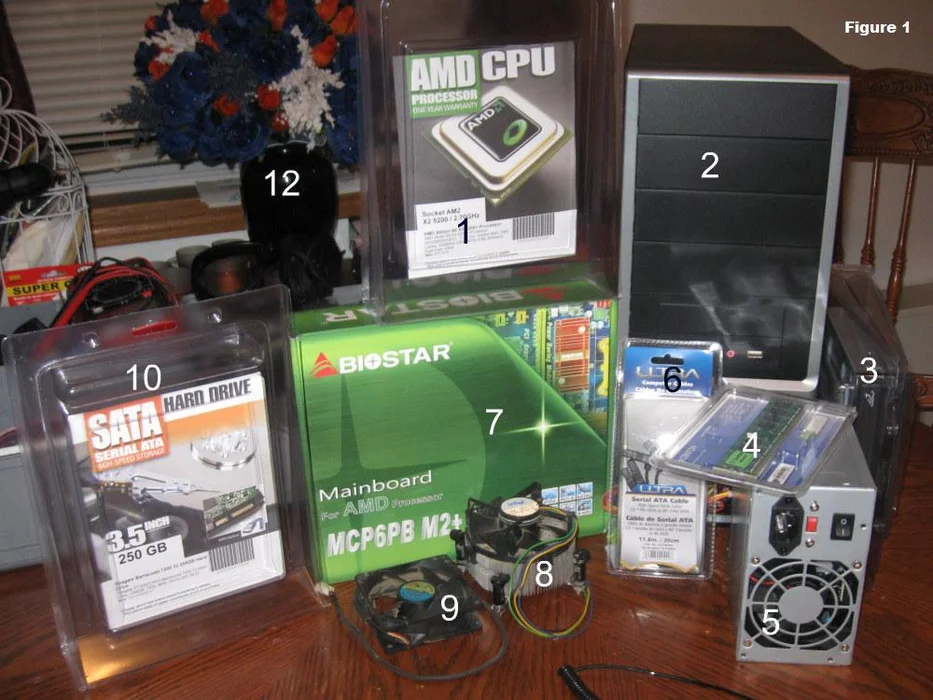
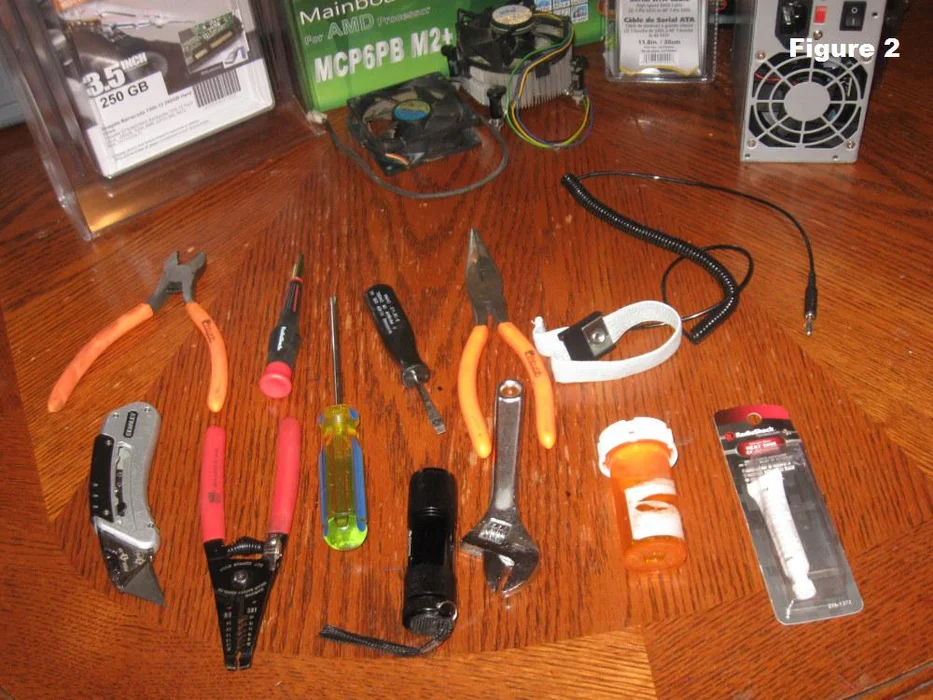
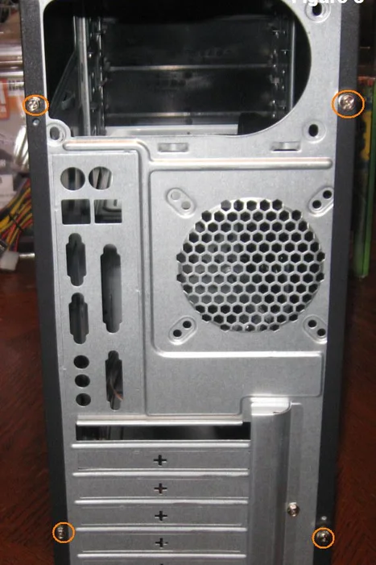
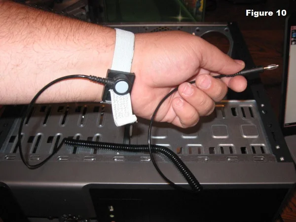
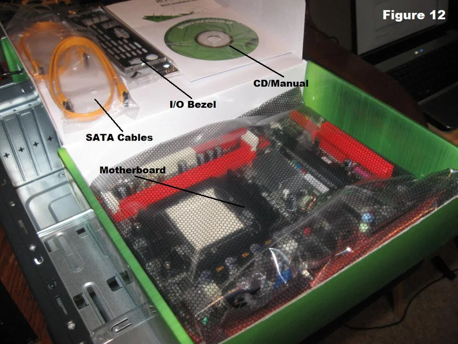
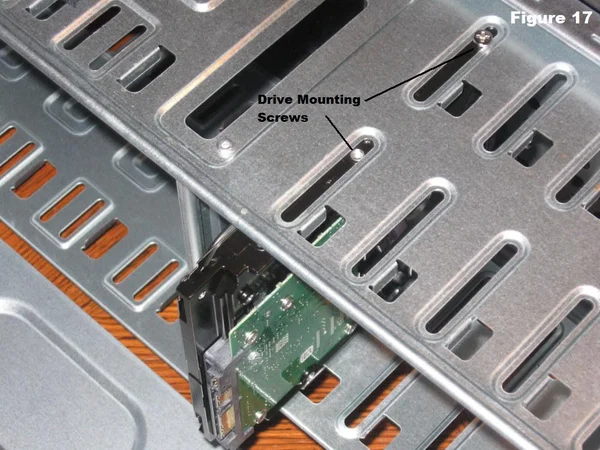
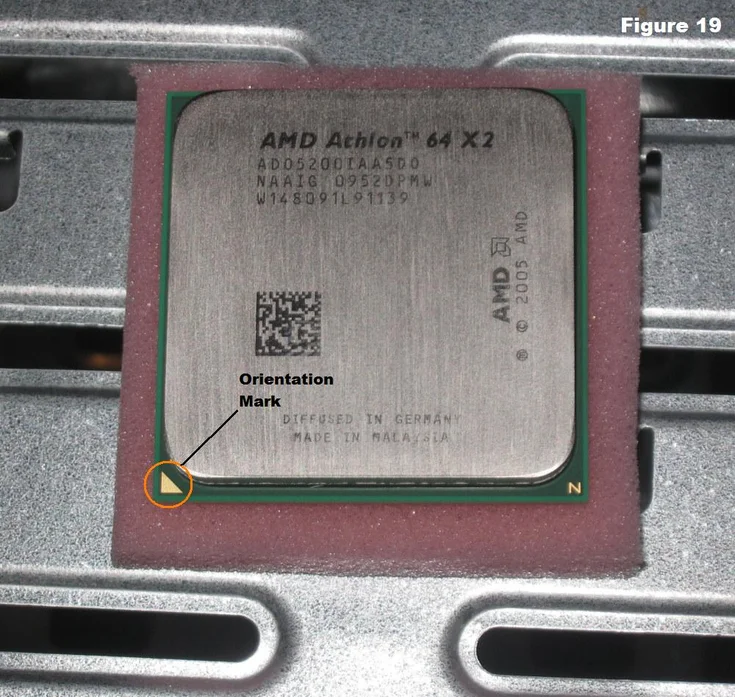
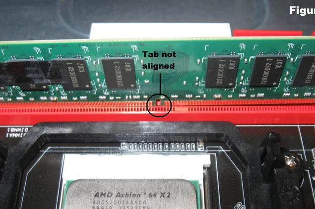
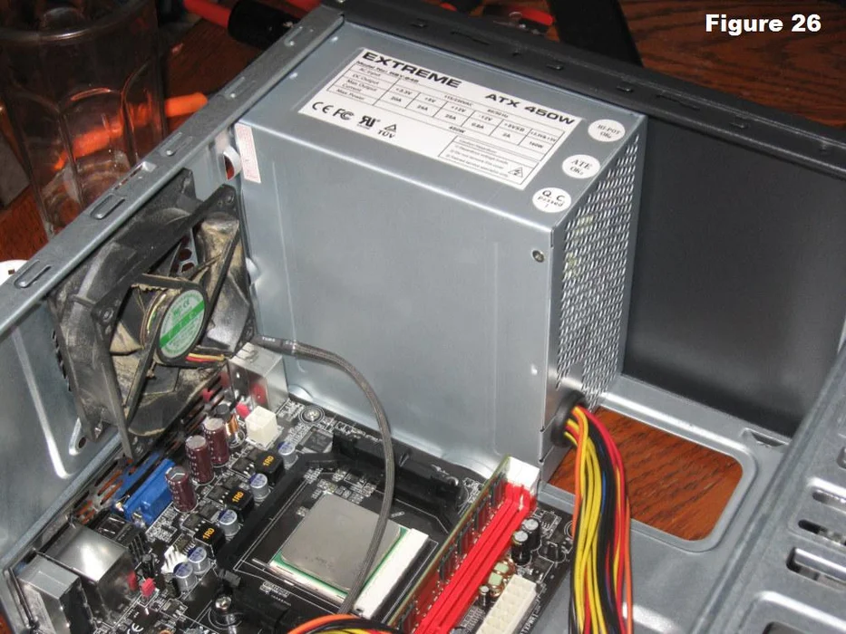
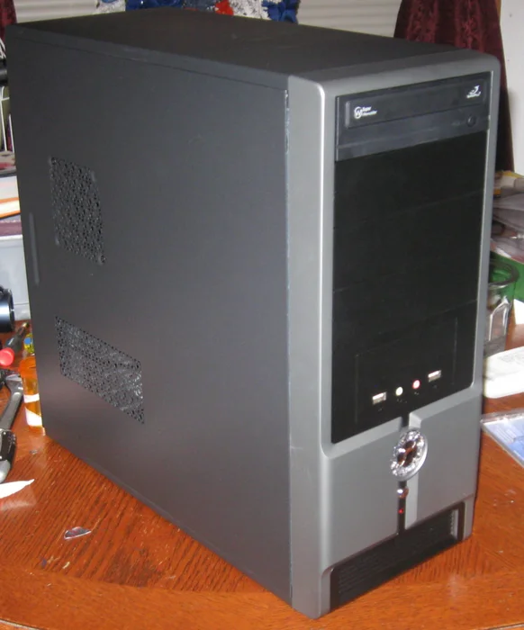

This set of instructions will help you assemble a basic computer capable of running most modern software packages encountered by a casual user. Modern computers become more affordable when users supplement their monetary investment with a few hours of effort. This computer build will be very basic and will be the minimum hardware necessary to have a functional system. After you have all of the parts and materials needed, it will take between 2 and 4 hours to assemble your computer and you will need to be able to use simple hand tools, such as a screwdriver and a pair of pliers.
How to Assemble a Computer Unit
Step 1: Procuring Parts
First you will need to buy the parts necessary to build the computer. The parts we will use in this project are labeled in figure 1:
1. Processor (CPU)
2. Computer Case
3. Optical Drive (DVD RW and SATA capable)
4. Memory (RAM)
5. Power Supply
6. SATA Cables
7. Motherboard (SATA Capable)
8. Processor Fan
9. Case Fan
10. Hard Drive (SATA Capable)
11. Assortment of case and drive screws (Not Pictured)
12. Flowers (necessary if you are invading the space of your significant other)
Most, if not all of these parts can be bought together in what is known as a “barebones kit”. In this instance, the case, motherboard, cpu, hard drive, and memory were bought together from tigerdirect.com as a barebones kit for around $200. The DVD drive and cables were purchased from newegg.com for less than $30 before shipping. There is an obvious financial advantage to buying parts bundled together, but less obvious is the benefit you will realize from the amount of time you save trying to research parts compatibility.
Step 2: Gather Tools and Supplies
Gather the tools you will need for the project.
Step 3: Open the Case
Open the computer case by removing the side panels. Find the screws that hold the side panels in place and remove them (shown in figure 3 circled in red). The panel is removed by first sliding it back (figure 4) then lifting it away from the case (figure 5).
Step 4: Ground Yourself
Put the grounding strap on your wrist (Figure 10) and connect the other end to the computer case. If your strap is not equipped with a clip to hook to the case, find a place to wedge against the metal as shown in figure 11. This will prevent any buildup of static electricity on your body from damaging the computer components.
Step 5: Install Motherboard
To install the motherboard we need parts that should have been included with your purchased components
Step 6: Install Hard Drive
The hard drive is the device that stores all of your data. It is 3.5" wide and needs to be mounted so that you can gain access to the cable connections on the back
Step 7: Install the CPU
The CPU is the brain of the computer. It is installed on the motherboard in the socket shown in figure 20.
Step 8: Install RAM
The RAM is the temporary memory location that the processor works from. Permanently stored data is pulled from disks and stored in RAM while the processor works with it. The memory is easy to install
Step 9: Install Power Supply
Consult your case documentation for details and then follow these directions to install the power supply
Step 10: Wrap Up
Now that the components are completely installed, the last thing to do is to reinstall the side panels on the case. The computer is now ready to be turned on and to have software loaded on it. If the computer has problems starting up, check all component connections and mounting to make sure that you have hooked everything up correctly. Consult individual component manuals for specific troubleshooting information if problems persist.